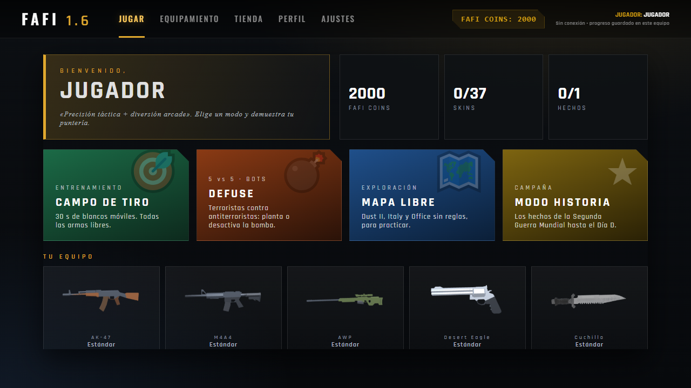
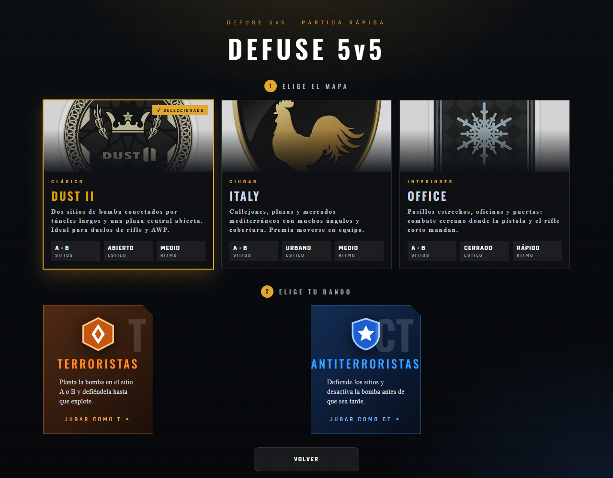
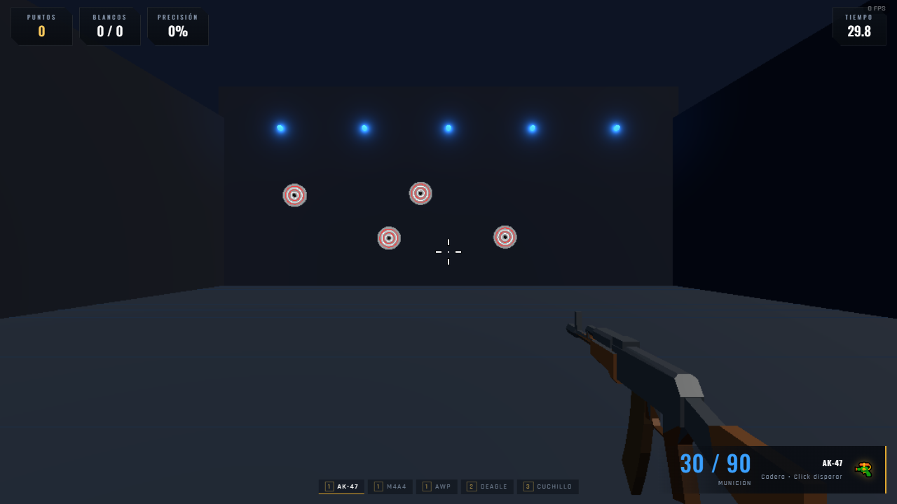
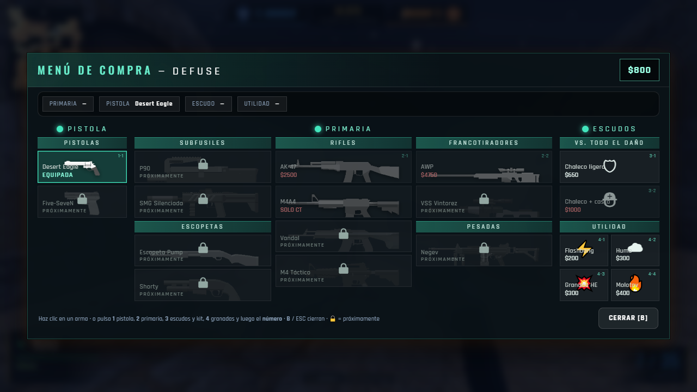
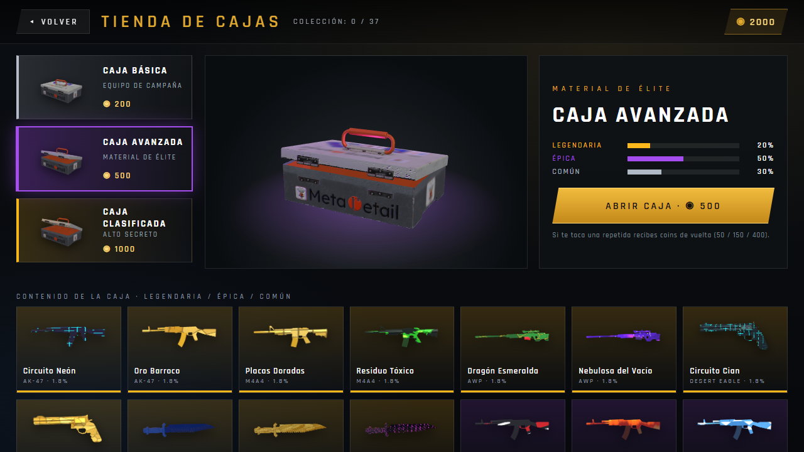
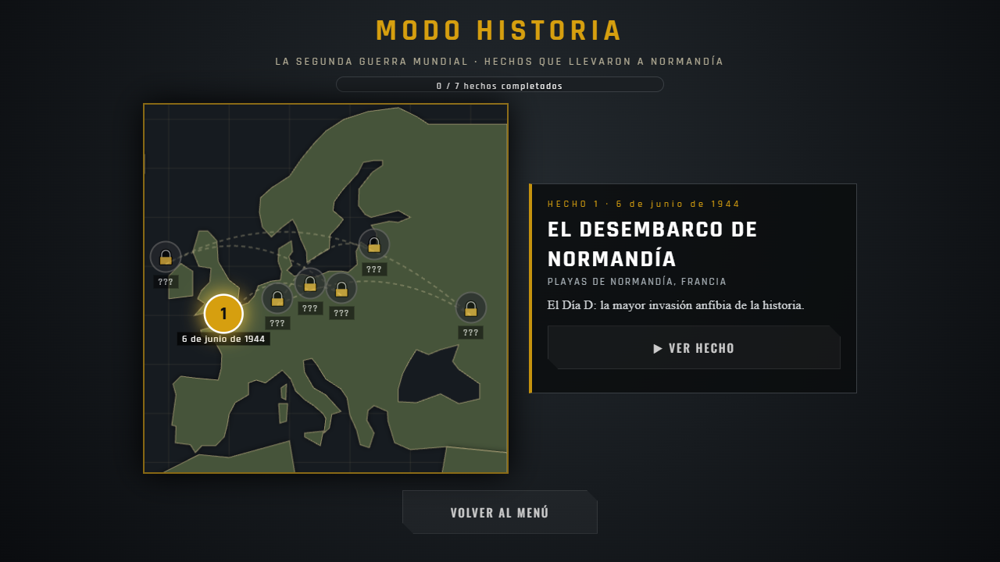

1.6
El shooter táctico que corre en tu navegador.

Team T Studio ✂

Esto es un fanzine sobre FAFI 1.6, un juego de disparos por equipos inspirado en Counter-Strike que hicimos en el colegio y que se juega en una página web: abrís el link y jugás.
Nació de tres problemas: el hardware caro, las descargas que pesan horas y los controles que espantan a quien nunca jugó. Por eso FAFI corre en computadoras de pocos recursos (alcanza con 4 GB de memoria), no se instala y tiene reglas fáciles de entender.
Qué vas a encontrar
- Cómo se juega y los controles
- Los modos, las armas y las skins
- Online, amigos y chat de voz
- Cómo está hecho por dentro
- Quiénes somos

Tres consejos
- Agachate y disparás ráfagas cortas: después de 7 balas seguidas el retroceso se dispara.
- Un tiro a la cabeza hace mucho más daño.
- La Desert Eagle solo es precisa quieto y sin spamear.
Terroristas contra antiterroristas. Los T plantan la bomba en el sitio A o B; los CT lo impiden o la desactivan antes de que explote.

| Regla | Cómo es |
|---|---|
| Partida | 18 rondas · gana quien llega a 12 |
| Bandos | al azar, y se cambian a mitad de partida |
| Economía | ganás dinero por ronda y por baja; comprás con B |
| Bombas | se planta y desactiva manteniendo E |
| Mapas | Dust II · Italy · Office · Mirage |
Los bots no hacen trampa: escuchan disparos y pasos, se avisan entre sí y rescatan la bomba.

Modo Aim: un campo de tiro con blancos móviles y sin límite de tiempo. Todas las armas están en la tienda y cada disparo deja su marca en las paredes. Es práctica pura: no da coins.
Mapa libre: recorré Dust II, Italy y Office sin reglas ni rondas, a tu ritmo, con ambientación nocturna.
Truco de dibujante
Apretá la tecla a la izquierda del 1 y dejá un grafiti en la pared o en el piso, con pintura que salpica y todo.
| Tipo | Armas |
|---|---|
| Rifles | AK-47 · M4A4 · Vandal |
| Francotiradores | AWP (zoom doble y cerrojo) · VSS |
| Pistolas | Five-SeveN (gratis al empezar) · Desert Eagle |
| Subfusiles | P90 · SMG silenciada |
| Escopetas | Pump · Shorty |
| Pesada | Negev |
| Cuerpo a cuerpo | Karambit y cuchillo de combate |
| Granadas | aturdidora · humo · explosiva · incendiaria |

Cada arma tiene su propio patrón de retroceso y la mira se abre cuando te movés o disparás.

Skins: camuflajes, llamas, escamas y circuitos que se pintan sobre el modelo 3D, en tres rarezas: común, épica y legendaria.
Cajas: se abren con Fafi Coins. Si te sale una repetida, te devuelven coins.
Fafi Pass · 100 niveles
Jugá partidas de Defuse, ganá experiencia y desbloqueá recompensas. Hay un pase gratis y un pase premium (el premium todavía no está habilitado).
Una película dentro del juego. El primer capítulo cuenta el desembarco de Normandía, el 6 de junio de 1944, en ocho escenas narradas con voz.

- Lanchas Higgins, aviones, búnkeres y el Muro del Atlántico, todo hecho con el mismo motor 3D del juego.
- La duración de cada escena la marca la locución.
- Los otros seis capítulos, del ascenso del nazismo a la caída de Berlín, ya están en el mapa de la campaña.
Salas 5 vs 5
Creá una sala, mirá quién está conectado y votá el mapa entre todos.
Amigos al instante
Buscá jugadores, mandá solicitudes y recibí el aviso en pantalla en tiempo real. Ves quién está en línea.
Retos 1 vs 1
Desafiá a un amigo conectado y aceptá desde una notificación.
Chat de voz
Se activa al entrar a una sala. Elegís voz automática, pulsar para hablar o micrófono abierto, y en Ajustes regulás micrófono, volumen, eco y ruido.
El navegador ya sabe dibujar, leer teclado y mouse y reproducir sonido. Solo hay que darle las instrucciones correctas:
| Pieza | Para qué sirve |
|---|---|
| HTML + CSS | la página, los menús y el diseño |
| JavaScript | las reglas, los bots, el movimiento y los disparos |
| Three.js / WebGL | dibuja el mundo 3D con la placa de video |
| Web Audio | sonido con dirección y distancia |
| WebRTC | el chat de voz entre jugadores |
El bucle del juego
Leer teclas y mouse → actualizar jugador, bots y balas → dibujar → repetir. 60 veces por segundo.
Detrás del juego
Servidor con PHP 8, MySQL, WebSocket, Redis y Docker: se levanta todo con un solo comando. Más de 12 mil líneas de código en módulos.
R&D
Technical Writer
Developer
De dónde venimos
EEST N°1 “Eduardo Ader”, Vicente López. Laboratorio de Programación 5°3.
Profesores: Yamil Ganduglia y Elias York.
Gracias
A quienes probaron el juego y a los autores de los sonidos con licencia libre (los créditos están en el repositorio).
web y
jugá
Código: github.com/SantinoLaudati/Fafi-1.6
Instagram: @teamtstudio
pasá este fanzine a alguien que no juegue nunca ✂